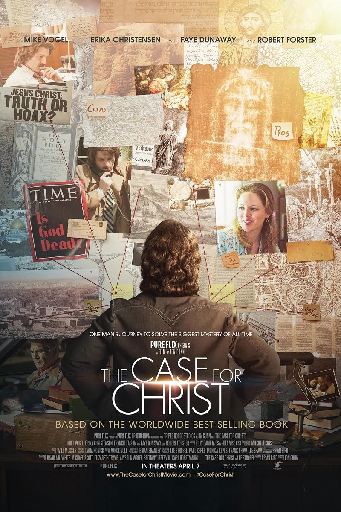

archive · 5
films & series
films and series, and what they left.
// films 3
La StradaFederico Fellini · 1954

The Case for ChristJon Gunn · 2017Perfect DaysWim Wenders · 2023// series 2

nothing matches.
films and series, and what they left.

The Case for ChristJon Gunn · 2017Perfect DaysWim Wenders · 2023nothing matches.